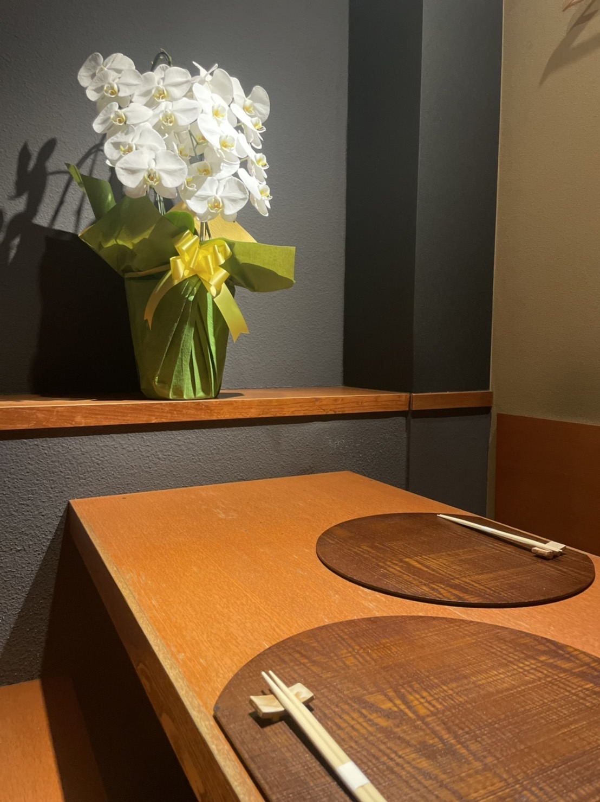

It takes you only for 5 minutes from JR Kamata Station. Tomoe, place is such a hidden spot with Japanese unique atmosphere.
There is a counter table that you can see directly the process of cooking like a live show and half private space that separates form others as well.
蒲田駅から徒歩5分。隠れ家的にひっそり佇む当店。落ち着いた雰囲気の店内には、料理人の手仕事を目の前で楽しめるライブ感あるカウンター席に、半個室のテーブル席をご用意しました。周りを気にせず寛げるので、誕生日や記念日、退職祝などサプライズにも最適です。